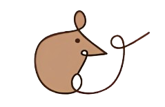
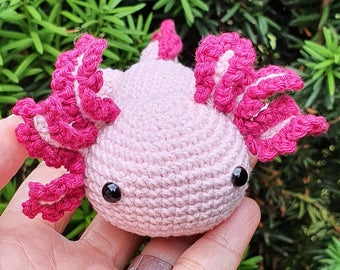
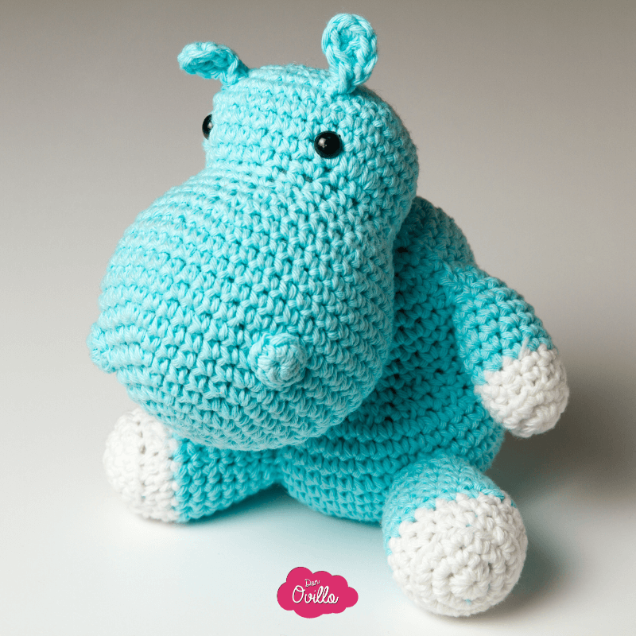
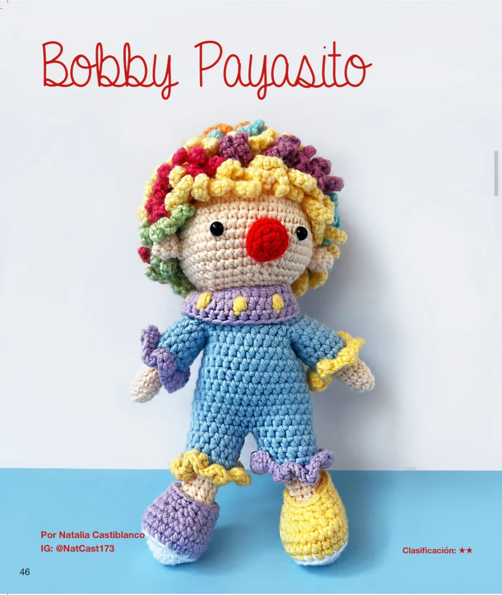

Petits Muchoirs
Inicio
Tienda
Nosotros
Contacto

Amigurumis
personalizados



En Petits Mouchoirs nos dedicamos a hacer muñecos tejidos (amigurumis) personalizados. A petición de los clientes elaboramos desde personajes de caricaturas y videojuegos hasta animales, objetos y diseños originales de la más alta calidad con los materiales ideales: hilos suaves, rellenos hipoalergénicos, ojos de seguridad. Petits Muchoirs te ofrece una gran opción de regalo para alguien que quieras o en su lugar te presentamos nuestros kits de amigurumis para que aprendas a tejerlos.